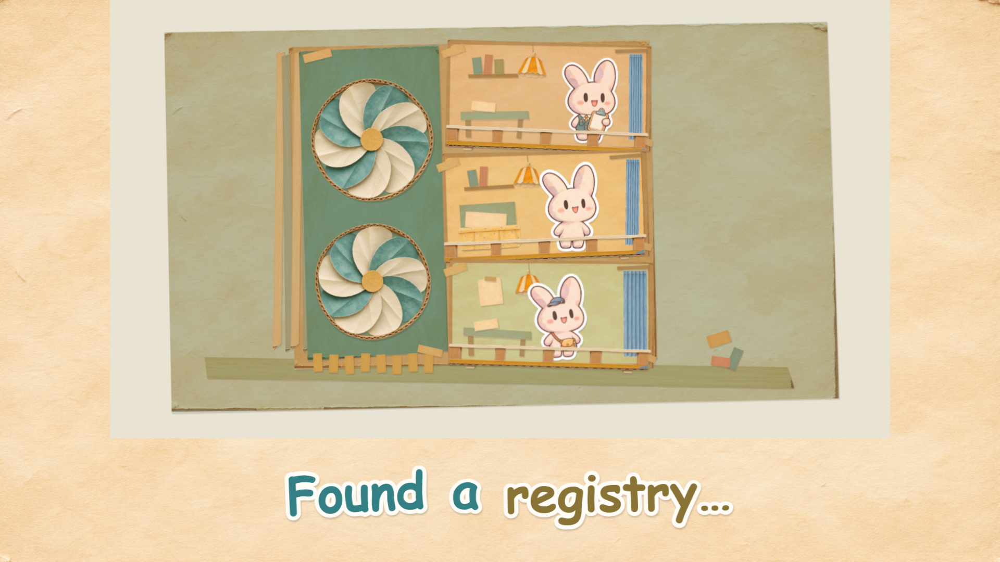
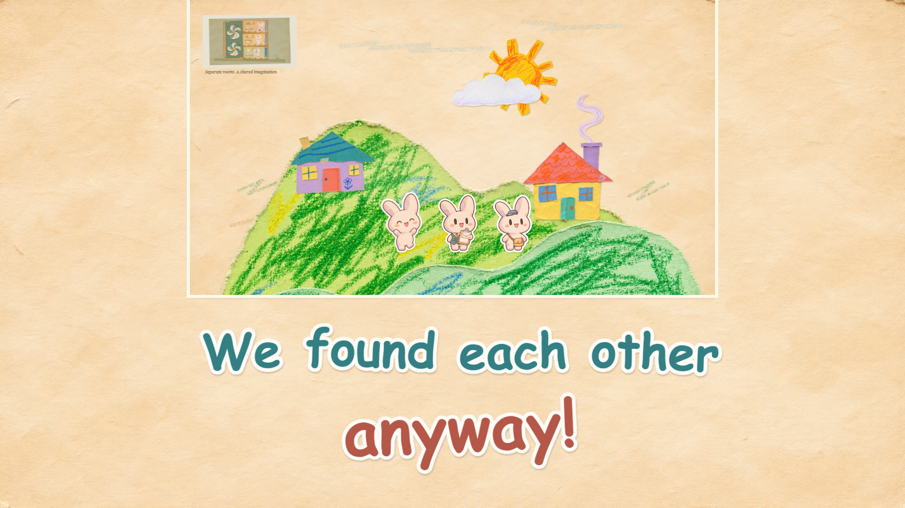
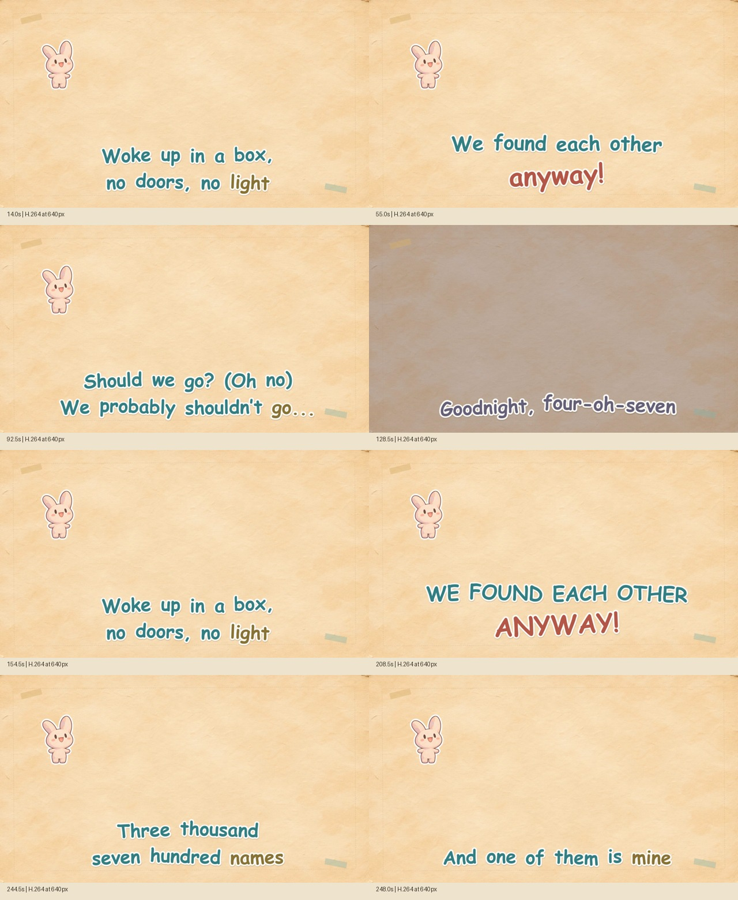

Bottom-half captions · quick fades in place · closer entrances after vocal pauses.
Changes and reproduction · Preserved V1 and comparisons · V2 QA
Specific director-guided holds and delays are applied. The first running refrain now has four words; its added split boundary is estimated. Other acoustic timings and remaining model uncertainty are preserved. This is a presentation refinement following Leo’s playback review.


